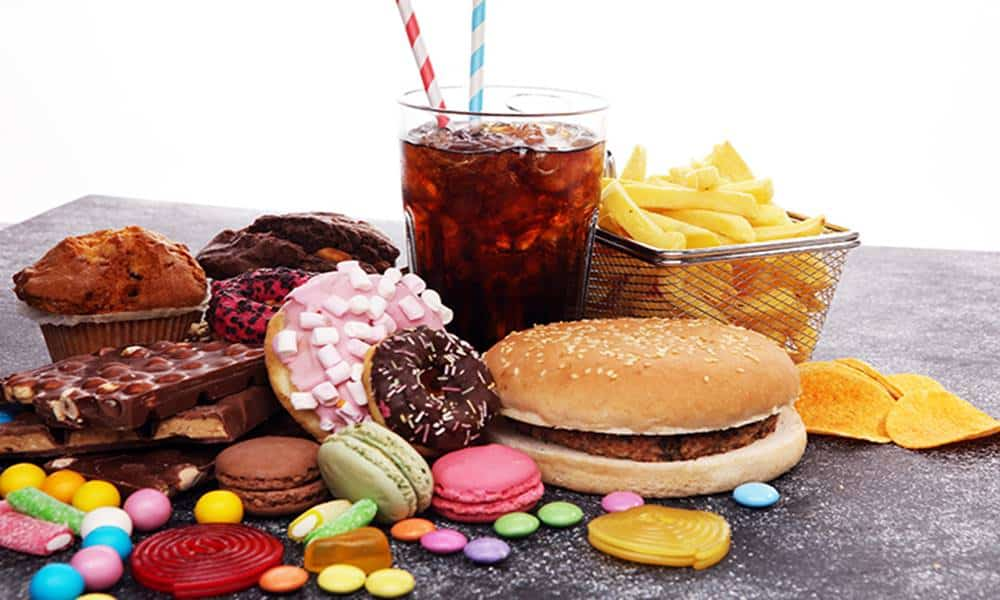

A má alimentação é cada vez mais comum nos nossos dias. A falta de tempo para apreciar a refeição, a necessidade de alimentos fabricados rapidamente e a grande variedade de produtos pouco saudáveis auxiliam no aumento do número de pessoas que não fazem uma alimentação correta. A seguir, descreveremos alguns erros muito comuns que cometemos quando o assunto é alimentação.
onsumir muito açúcar. O consumo exagerado de açúcar está relacionado com problemas como o desenvolvimento de obesidade. Montar pratos com pouca variedade. Pratos coloridos apresentam mais nutrientes e, portanto, são mais saudáveis. Não comer verduras, frutas e legumes. Esses alimentos são essenciais para nos fornecer vitaminas e também fibras. Não se hidratar adequadamente. O recomendado é que se ingira, em média, dois litros de água diariamente. Pular as refeições. Ao pular refeições, uma pessoa fica muito tempo sem se alimentar e isso pode fazer com que na hora de se alimentar a pessoa coma exageradamente. .
.